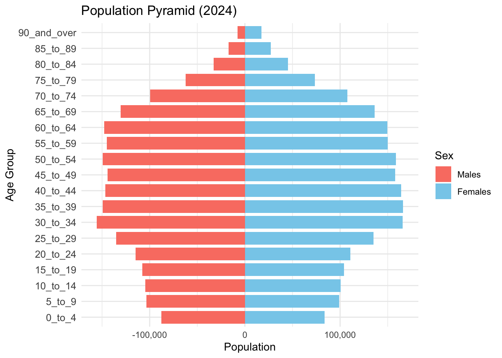
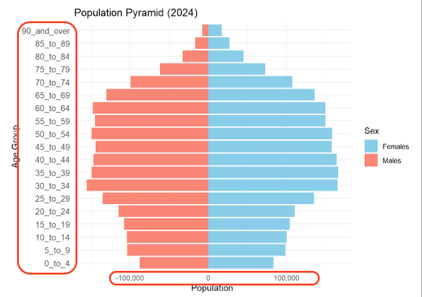
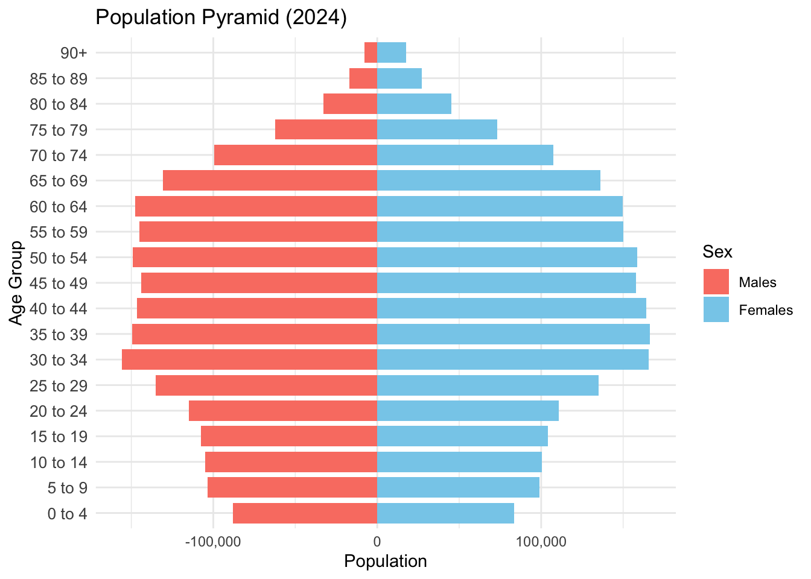
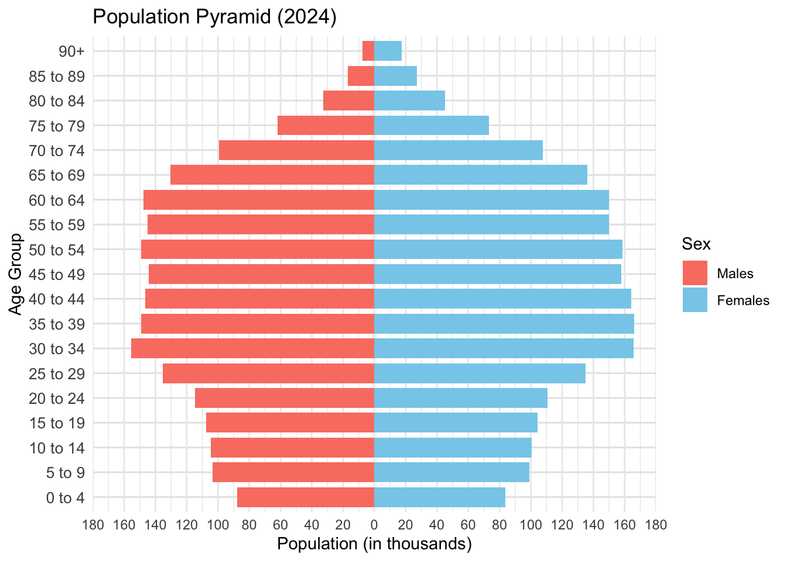
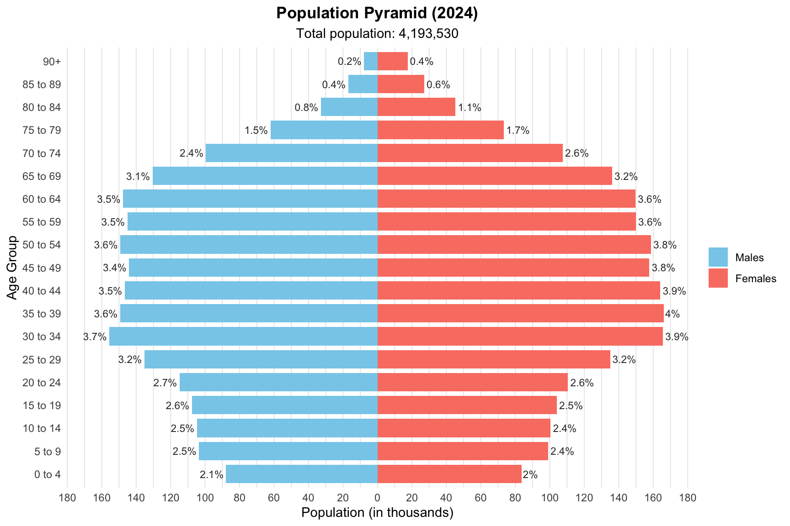
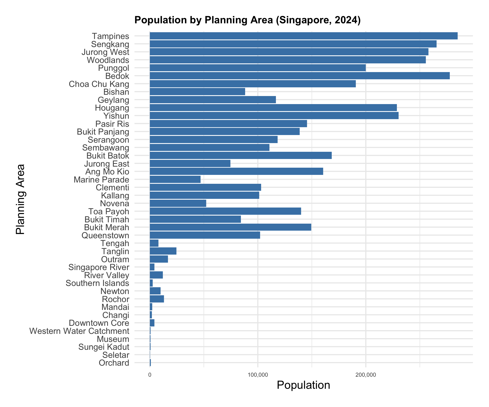
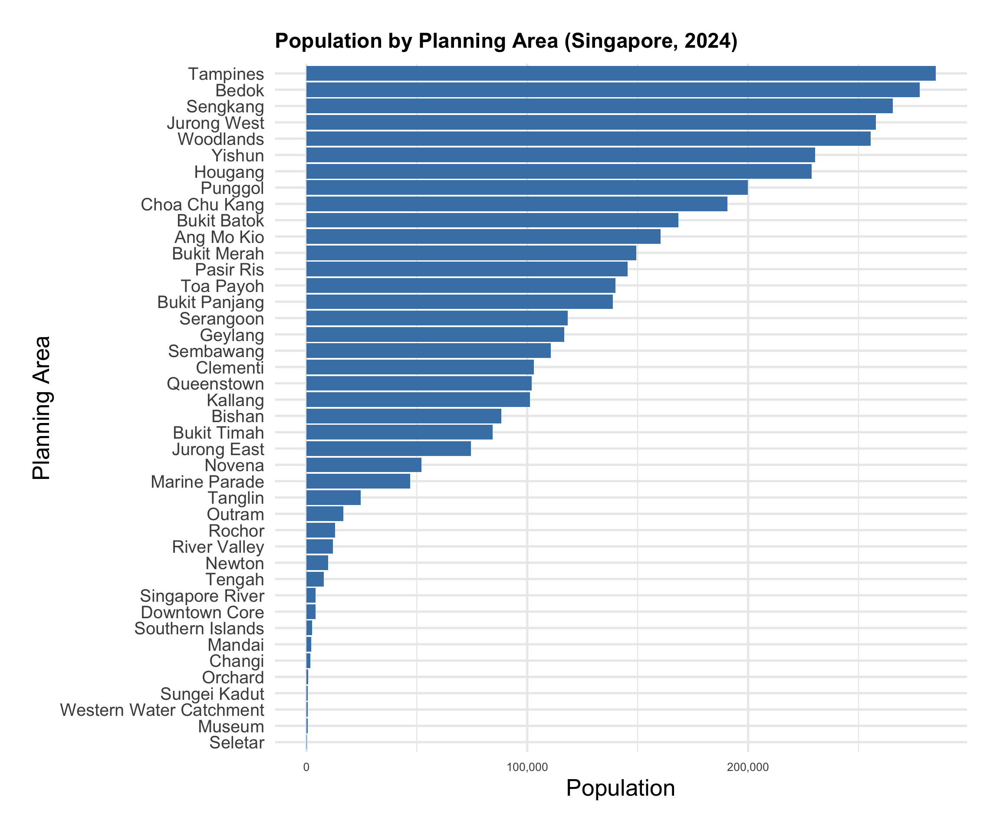
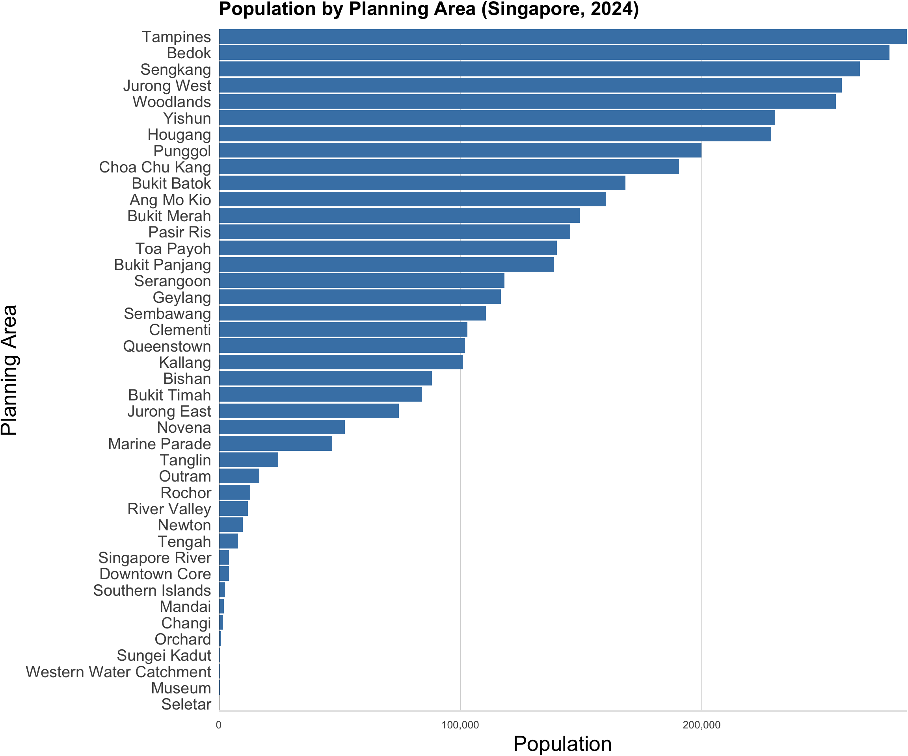
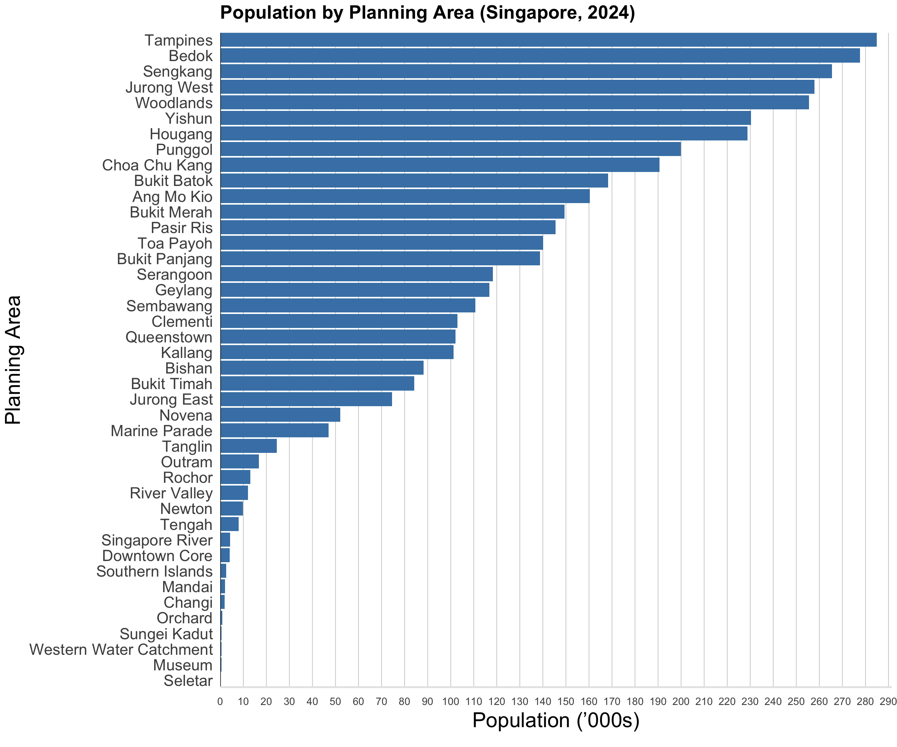

Show code
pacman::p_load(tidyverse, readxl, ggplot2, ggthemes, dplyr, scales,forcats, ggplot)Nor Hendra
May 10, 2025
May 11, 2025
In Phase 1 of Take-home Exercise 1, we were tasked to prepare and design data visualisation for the article. The data we used was the Singapore Residents by Planning Area / Subzone, Single Year of Age and Sex, June 2024 available on Singstat. In this phase 2, I will be selecting a fellow classmate to critic three good design principles and three areas for further improvement.
I hope the audience is able to appreciate how I have provided the step by step code to see how the plot evolves and why I made each change. My goal is to take you through my thought process for every improvement and show how each tweak builds towards the polished final visualization without changing too much of the main skeleton of the original author’s code.
I have chosen to use this classmate’s plot of the Population Pyramid. Before we get started on analyzing his pyramid. Let’s load the data and packages required for this!
I will be doing the same steps I did in phase 1 to clean the data before proceeding. Skip ahead to get to the main task.
✅ No missing values, proceed to the next checkStep 1: Checking for zero-population rows.
⚠️ Found 23181 rows with Pop == 0 (empty demographic cells):
# A tibble: 6 × 6
PA SZ Age Sex Pop Time
<chr> <chr> <chr> <fct> <dbl> <dbl>
1 Ang Mo Kio Ang Mo Kio Town Centre 80 Males 0 2024
2 Ang Mo Kio Ang Mo Kio Town Centre 86 Males 0 2024
3 Ang Mo Kio Ang Mo Kio Town Centre 86 Females 0 2024
4 Ang Mo Kio Ang Mo Kio Town Centre 88 Males 0 2024
5 Ang Mo Kio Ang Mo Kio Town Centre 89 Males 0 2024
6 Ang Mo Kio Ang Mo Kio Town Centre 89 Females 0 2024Step 2: Removing those zero-population rows.
Step 3: Confirm that all rows with zero-population has been removed.
Step 1: Convert the ‘90 & Over’ to integers.
[1] "PA" "SZ" "Age" "Sex" "Pop" "Time"# 2. Convert "Age" → numeric, mapping "90 & Over" → 90
sgdemo2024 <- sgdemo2024 %>%
mutate(
Age = parse_number(as.character(Age)),
Age = as.integer(Age)
)
# 3. Verify the transformation
age_stats <- sgdemo2024 %>%
summarise(
min_age = min(Age, na.rm = TRUE),
max_age = max(Age, na.rm = TRUE)
)
cat(sprintf(
"✅ Age conversion complete: now an integer from %d to %d.\n",
age_stats$min_age, age_stats$max_age
))✅ Age conversion complete: now an integer from 0 to 90.Step 2: Confirm that there are no more “90 & Over” entries in my data.
Step 3: Confirm the column type for Age is integer.
Step 4: Ensure no NA in the column for Age.
Rows with SZ == "Total": 0 Rows with Age == NA (was "Total"): 0 Rows with Sex == "Total": 0 # 4. If any totals remain, peek at them
if (n_sz_total + n_age_na + n_sex_total > 0) {
cat("⚠️ Example summary‐row(s):\n")
sgdemo2024 %>%
filter(
SZ == "Total" |
is.na(Age) |
as.character(Sex) == "Total"
) %>%
slice_head(n = 5) %>%
print()
} else {
cat("✅ No summary‐row entries remain. You’re all set.\n")
}✅ No summary‐row entries remain. You’re all set.Current Sex levels: Males, Females # Compare and act
if (identical(actual_levels, expected_levels)) {
cat("✅ Sex factor levels are already correct (Males, Females).\n")
} else {
warning("⚠️ Sex factor levels are not as expected. Resetting to Males, Females.")
sgdemo2024 <- sgdemo2024 %>%
mutate(Sex = factor(Sex, levels = expected_levels))
cat("✅ Sex factor levels have been reset to:",
paste(levels(sgdemo2024$Sex), collapse = ", "), "\n")
}✅ Sex factor levels are already correct (Males, Females).Rows with SZ == "Total": 0 Rows with Age == NA (was "Total"): 0 Rows with Sex == "Total": 0 # 4. If any totals remain, peek at them
if (n_sz_total + n_age_na + n_sex_total > 0) {
cat("⚠️ Example summary‐row(s):\n")
sgdemo2024 %>%
filter(
SZ == "Total" |
is.na(Age) |
as.character(Sex) == "Total"
) %>%
slice_head(n = 5) %>%
print()
} else {
cat("✅ No summary‐row entries remain. You’re all set.\n")
}✅ No summary‐row entries remain. You’re all set.I had to rewrite the earlier stages of the code before plotting the pyramid as I have cleaned and renamed my data. Below is a comparison from a screenshot of the plot and the plot I created based off his code. Although there are slight differences in code, the overall aesthetic and function of the plot remains the same.
pyramid_data <- aggregate(Pop ~ `AG` + Sex, data = Resident_Data, sum)
age_order <- c("0_to_4", "5_to_9", "10_to_14", "15_to_19", "20_to_24", "25_to_29",
"30_to_34", "35_to_39", "40_to_44", "45_to_49", "50_to_54", "55_to_59",
"60_to_64", "65_to_69", "70_to_74", "75_to_79", "80_to_84", "85_to_89",
"90_and_over")
pyramid_data$AG <- factor(pyramid_data$AG, levels = age_order)
pyramid_data$Pop[pyramid_data$Sex == "Males"] <- -pyramid_data$Pop[pyramid_data$Sex == "Males"]
ggplot(data = pyramid_data, aes(x = AG, y = Pop, fill = Sex)) +
geom_bar(stat = "identity") +
coord_flip() +
labs(title = "Population Pyramid (2024)", x = "Age Group", y = "Population") +
scale_y_continuous(labels = comma) +
scale_fill_manual(values = c("skyblue", "salmon")) +
theme_minimal() +
theme(axis.text.y = element_text(size = 10)) 
sgdemo2024 <- sgdemo2024 %>%
mutate(Age = as.numeric(as.character(Age)))
age_order <- c(
"0_to_4", "5_to_9", "10_to_14", "15_to_19", "20_to_24", "25_to_29",
"30_to_34","35_to_39","40_to_44", "45_to_49", "50_to_54", "55_to_59",
"60_to_64","65_to_69","70_to_74", "75_to_79", "80_to_84", "85_to_89",
"90_and_over"
)
sgdemo2024 <- sgdemo2024 %>%
mutate(
AG = cut(
Age,
breaks = c(seq(0, 90, by = 5), Inf),
right = FALSE,
labels = age_order
),
AG = fct_explicit_na(AG, na_level = "90_and_over")
)
pyramid_data <- sgdemo2024 %>%
group_by(AG, Sex) %>%
summarise(Pop = sum(Pop), .groups = "drop") %>%
mutate(Pop = if_else(Sex == "Males", -Pop, Pop))
ggplot(pyramid_data, aes(x = AG, y = Pop, fill = Sex)) +
geom_col(width = 0.8) +
coord_flip() +
scale_y_continuous(labels = comma) +
scale_fill_manual(
values = c(
Males = "salmon",
Females = "skyblue"
)
) +
labs(
title = "Population Pyramid (2024)",
x = "Age Group",
y = "Population"
) +
theme_minimal() +
theme(
axis.text.y = element_text(size = 10)
)Symmetric, Diverging Bars for Easy Comparison
By plotting males on the left and females on the right, with a shared zero-center. I am able to instantly compare cohort sizes across the aisle. The mirror layout makes it easy to see at a glance which age groups are male or female dominated and by roughly how much.
Ordered, Evenly-Spaced Age Bands
The age groups run in a logical 5 year increment from bottom to top and they remain evenly spaced and sorted. This consistent ordering prevents cognitive load where viewers don’t have to hunt for a specific age group, for example the “20 to 24” in the middle of the chart. This also helps make trends (e.g. the bulge in middle ages) pop out immediately
Clean and Minimalist Theme with Gridlines
The light gridlines behind the bars gives you just enough reference to read values off the axis, without cluttering the visual.
Above is the four quadrants of clarity and aesthetic and based on the good design principles I found outlined previously, I would put this in Quadrant IV - beautiful but confusing.
The areas highlighted in red on the figure above are aspects I have some gripes with. The reason I said it is beautiful but confusing is because of the X-Axis and Y-Axis. The X-Axis indicating population shows value -100,000 to 100,000 - there is no such thing as a negative population (unless of course we are comparing those who aren’t alive anymore). Furthermore, the Y-Axis (age bands) has underscores in between the age. This can be indeed a little off-putting on a plot Ideally, it should just be the age bands without any underscores in between.
Let’s first work on renaming the age binning of the code to be without underscores. It would like something like below to replace the underscores.
# Apply binning and label cleanup
sgdemo2024 <- sgdemo2024 %>%
mutate(
AG = cut(Age, breaks = c(seq(0, 90, by = 5), Inf), right = FALSE, labels = age_order),
AG = fct_explicit_na(AG, na_level = "90_and_over"),
AG = gsub("_to_", "-", AG),
AG = gsub("_and_over", "+", AG),
AG = factor(AG, levels = gsub("_to_", "-", gsub("_and_over", "+", age_order)))
)Putting it Together - Plot after Improvement 1
age_order <- c(
"0 to 4", "5 to 9", "10 to 14", "15 to 19", "20 to 24", "25 to 29",
"30 to 34","35 to 39","40 to 44", "45 to 49", "50 to 54", "55 to 59",
"60 to 64","65 to 69","70 to 74", "75 to 79", "80 to 84", "85 to 89",
"90+"
)
sgdemo2024 <- sgdemo2024 %>%
mutate(
AG = cut(Age, breaks = c(seq(0, 90, by = 5), Inf), right = FALSE, labels = age_order),
AG = fct_explicit_na(AG, na_level = "90_and_over"),
AG = gsub("_to_", "-", AG),
AG = gsub("_and_over", "+", AG),
AG = factor(AG, levels = gsub("_to_", "-", gsub("_and_over", "+", age_order)))
)
pyramid_data <- sgdemo2024 %>%
group_by(AG, Sex) %>%
summarise(Pop = sum(Pop), .groups = "drop") %>%
mutate(Pop = if_else(Sex == "Males", -Pop, Pop))
ggplot(pyramid_data, aes(x = AG, y = Pop, fill = Sex)) +
geom_col(width = 0.8) +
coord_flip() +
scale_y_continuous(labels = comma) +
scale_fill_manual(
values = c(
Males = "salmon",
Females = "skyblue"
)
) +
labs(
title = "Population Pyramid (2024)",
x = "Age Group",
y = "Population"
) +
theme_minimal() +
theme(
axis.text.y = element_text(size = 10)
)
Next, let’s fix the X-Axis by ensuring it is positive both ways and in 20,000 increments with below code. The top one would be to fix the negative population and the bottom to aggregate them to 20,000 incremental bins.
I will also ensure it limits the plot to just 180000 and stop there to prevent extra grids showing up using below code chunk
Putting it Together - Plot after Improvement 2
age_order <- c(
"0 to 4", "5 to 9", "10 to 14", "15 to 19", "20 to 24", "25 to 29",
"30 to 34","35 to 39","40 to 44", "45 to 49", "50 to 54", "55 to 59",
"60 to 64","65 to 69","70 to 74", "75 to 79", "80 to 84", "85 to 89",
"90+"
)
sgdemo2024 <- sgdemo2024 %>%
mutate(
AG = cut(Age, breaks = c(seq(0, 90, by = 5), Inf), right = FALSE, labels = age_order),
AG = fct_explicit_na(AG, na_level = "90_and_over"),
AG = gsub("_to_", "-", AG),
AG = gsub("_and_over", "+", AG),
AG = factor(AG, levels = gsub("_to_", "-", gsub("_and_over", "+", age_order)))
)
pyramid_data <- sgdemo2024 %>%
group_by(AG, Sex) %>%
summarise(Pop = sum(Pop), .groups = "drop") %>%
mutate(Pop = if_else(Sex == "Males", -Pop, Pop))
max_pop <- ceiling(max(abs(pyramid_data$Pop)) / 20000) * 20000
max_pop <- max(180000, ceiling(max(abs(pyramid_data$Pop)) / 20000) * 20000)
ggplot(pyramid_data, aes(x = AG, y = Pop / 1000, fill = Sex)) +
geom_col(width = 0.8) +
coord_flip() +
scale_y_continuous(
limits = c(-180000, 180000) / 1000,
breaks = seq(-180000, 180000, by = 20000) / 1000,
labels = function(x) abs(x),
expand = c(0, 0)
)+
scale_fill_manual(values = c(Males = "salmon", Females = "skyblue")) +
labs(
title = "Population Pyramid (2024)",
x = "Age Group",
y = "Population (in thousands)"
) +
theme_minimal() +
theme(
axis.text.y = element_text(size = 10),
panel.grid.major.y = element_line(color = "gray90")
)
Great! Now it looks much better and cleaner than what it initially was. However, there are still some improvements to be made.
Fixing Colour: Another potential source of confusion lies in the color scheme chosen. The chart uses colors that invert the stereotypical associations—males are marked in “salmon” and females in “skyblue”. When readers see that the chart relates to gender, they may instinctively rely on color cues rather than consult the legend, especially if those colors align with common assumptions. While the intention may have been to challenge gender norms, this reversal can unintentionally mislead viewers and hinder clarity. Personally, I would prefer to adjust the color palette entirely, but in order to preserve the integrity of the original design, I will simply switch the color assignments for clarity.
Adding percentage-of-population: Absolute bar lengths show “how many” but not “how large a share” so I will be annotating each bar with its percentage to immediately tell the audience. This view will make both scale and structure transparent at a glance. Hence, even when 2 bars look of similar length, the percentage call-out removes any guessworrk readers have to mentally translate. Also, I’ll be adding the total population in the header to immediately anchor every subsequent percentage to give more context to the percentages added. With below code chunk, I will be adjusting the header to calculate total population so that the percentages can be referenced, along with percentage of total population on each bar.
Removing horizontal gridlines: Since axis ticks and percentage labels already give precise reference points, the extra gridlines behind the bars no longer add new information and can even distract by creating “railroad tracks” that compete with the bars. Without horizontal gridlines, audience can still read each bar against the axis labels and allows for a cleaner backdrop that draws all attention to the data itself. Ultimately sharpening the demographic story without compromising clarity of precision.
age_order <- c(
"0 to 4", "5 to 9", "10 to 14", "15 to 19", "20 to 24", "25 to 29",
"30 to 34","35 to 39","40 to 44", "45 to 49", "50 to 54", "55 to 59",
"60 to 64","65 to 69","70 to 74", "75 to 79", "80 to 84", "85 to 89",
"90+"
)
pct_data <- sgdemo2024 %>%
mutate(
AG = cut(
Age,
breaks = c(seq(0, 90, by = 5), Inf),
right = FALSE,
labels = age_order
),
AG = fct_explicit_na(AG, na_level = "90+")
) %>%
group_by(AG, Sex) %>%
summarise(Pop = sum(Pop), .groups = "drop") %>%
mutate(
Pop = if_else(Sex == "Males", -Pop, Pop),
pct = abs(Pop) / sum(abs(Pop)) * 100
)
total_pop <- sum(abs(pct_data$Pop))
ggplot(pct_data, aes(x = AG, y = Pop/1000, fill = Sex)) +
geom_col(width = 0.8) +
geom_text(
aes(label = paste0(round(pct, 1), "%"),
hjust = if_else(Sex == "Males", 1.1, -0.1)
),
size = 3, color = "gray20"
) +
scale_y_continuous(
limits = c(-180, 180),
breaks = seq(-180, 180, by = 20),
labels = abs,
expand = c(0, 0.02),
oob = scales::squish
) +
coord_flip(clip = "off") +
scale_fill_manual(values = c(Males = "skyblue", Females = "salmon")) +
labs(
title = "Population Pyramid (2024)",
subtitle = paste0("Total population: ", comma(total_pop)),
x = "Age Group",
y = "Population (in thousands)"
) +
theme_minimal() +
theme(
panel.grid.major.y = element_blank(),
panel.grid.major.x = element_line(color = "gray90", size=0.3),
panel.grid.minor.x = element_line(color = "gray90",size=0.3),
legend.position = "right",
legend.title = element_blank(),
plot.title = element_text(hjust = 0.5, face= "bold"),
plot.subtitle = element_text(hjust = 0.5)
)
Compared to the original version, this revised pyramid is both cleaner and more informative. By placing each bar’s share of the total alongside its count, viewers can instantly gauge not just “how many” but “how big a slice” each age band represents. Centralizing the title and subtitle with the overall population right up front anchors the narrative, while bold axis labels reinforce the key dimensions. Removing non-essential horizontal gridlines sharpens focus on the data itself. Altogether, these tweaks make the demographic story more transparent, accessible, and visually engaging.
Below is the bar chart plotted by the same classmate and its code chunk. I just altered it for the data to use the data I have cleaned up.
filtered_data <- sgdemo2024[!is.na(sgdemo2024$Pop) & sgdemo2024$Pop > 0, ]
ggplot(data = filtered_data, aes(x = reorder(PA, Pop), y = Pop)) +
geom_bar(stat = "identity", fill = "steelblue") +
coord_flip() +
labs(
title = "Population by Planning Area (Singapore, 2024)",
x = "Planning Area",
y = "Population"
) +
scale_y_continuous(labels = comma) +
theme_minimal(base_size = 20) +
theme(
plot.title = element_text(size = 18, face = "bold"),
axis.text.y = element_text(size = 15),
axis.text.x = element_text(size = 10),
plot.margin = margin(1, 1, 1, 1, "cm")
)
Horizontal bars
I like that the plot is a horinzontal bar plot. This is because by flipping the axes so that the Planning Area names run along the y-axis means that I am able to see the full names (e.g “Western Water Catchment”) legibly. If the plot had it on the x-axis, it would have been tiny, and rotated text.
Minimalist Theme with Subtle Gridlines
I like that the gridlights at the major tick marks are light grey as this removes all non-essential decorations. It allows the eye just enough reference to read off values without cluttering the canvas. It keeps the focus on the data itself.
Practical Guides for Using Colour and Guides for Encoding Values in Graph
In Lesson 2, we learned about practical guides of using colours in chart. I like how the plot has adhered to this rule but using the same colour and has not used different colors just for the sake of it. I also like how the values start at zero, which according to Lesson 2 - is a great thing! It ensures the bars shows a quantitative scale.
According to the four quadrants of clarity and aesthetic and based on the grood design principles I outlined above, I would put this in Quadrant Above is the four quadrants of clarity and aesthetic and based on the good design principles I found outlined previously, I would put this in Quadrant II - clear but ugly.
The bars are all over the place and not arranged in an orderly manner. It does not tell me any new information by putting it randomly - it is not as if the bars are arranged by regions and such. Hence, it is extremely confusing and looks all over the place. By fixing this and arranging them by magnitude, readers will be able to immediately see who’s on top” which tells the story at a glance. Furthermore, human perception excels at comparing nearby items of similar size. In a sorted bar chart, adjacent bars differ by the smallest possible increments, making it easy to judge differences.
Below code chunk will be added before the ggplot to arrange them in descending order from the top - from most populated to least populated.
Putting it Together - Improvement 1
pa_totals <- sgdemo2024 %>%
group_by(PA) %>%
summarise(Pop = sum(Pop, na.rm = TRUE)) %>%
filter(Pop > 0) %>%
arrange(desc(Pop)) # largest → smallest
pa_totals$PA <- factor(pa_totals$PA, levels = rev(pa_totals$PA))
ggplot(pa_totals, aes(x = PA, y = Pop)) +
geom_col(fill = "steelblue") +
coord_flip() +
scale_y_continuous(labels = comma) +
labs(
title = "Population by Planning Area (Singapore, 2024)",
x = "Planning Area",
y = "Population"
) +
theme_minimal(base_size = 20) +
theme(
plot.title = element_text(size = 18, face = "bold"),
axis.text.y = element_text(size = 15),
axis.text.x = element_text(size = 10),
plot.margin = margin(1, 1, 1, 1, "cm")
)
Doesn’t it already look better? We can instantly tell a story and use the natural human perception to gauge the population!
Because the bars themselves run themselves run horizontally, adding grid lines in the same direction creates visual “noise” that doesn’t add new information. Readers already naturally follow the length of each bar to compare values. By stripping out the horizontal grids, I can declutter the plot while still preserving the vertical grid lines that act as helpful reference ticks. WIth fewer lines means a higher “data-ink ratio” as we can guide the eye straight to the bars. Below code chunk will aim to achieve those things!
In the original plot, the planning-area labels sit far from the bar and the horizontal bar lines extends on the left-hand side of the bars. When labels are far from the bars they describe, readers must track back and forth across the white space, increasing cognitive load. Pulling the text flush to the bar edge establishes an immediate, one-to-one visual link between name and value. Below code chunk aims to achieve that by keeping the layout tight ensuring nothing feels floating in the margin and the plot frame remains compact.
Putting it Together - Improvement 2
pa_totals <- sgdemo2024 %>%
group_by(PA) %>%
summarise(Pop = sum(Pop, na.rm = TRUE)) %>%
filter(Pop > 0) %>%
arrange(desc(Pop))
pa_totals$PA <- factor(pa_totals$PA, levels = rev(pa_totals$PA))
ggplot(pa_totals, aes(x = PA, y = Pop)) +
geom_col(fill = "steelblue") +
coord_flip(expand = FALSE) +
geom_hline(yintercept = 0, linewidth = 0.5, color = "black", inherit.aes = FALSE) +
scale_x_discrete(expand = c(0, 0.02)) +
scale_y_continuous(
labels = comma,
expand = c(0, 0),
) +
labs(
title = "Population by Planning Area (Singapore, 2024)",
x = "Planning Area",
y = "Population"
) +
theme_minimal(base_size = 20) +
theme(
axis.text.y = element_text(
size = 15,
hjust = 1,
margin = margin(r = 2)
),
panel.grid.major.y = element_blank(),
panel.grid.minor.y = element_blank(),
panel.grid.major.x = element_line(color = "grey80", linewidth=0.3),
panel.grid.minor.x = element_blank(),
plot.title = element_text(size = 18, face = "bold"),
axis.text.x = element_text(size = 10),
axis.line.x = element_line(color = "grey90", linewidth = 0.8),
plot.margin = margin(1, 1, 1, 1, "pt")
)
Wow, it already looks much better, cleaner and compact! However, just one more minor tweak to make this even better!
The increment units are 100,000. Let’s switch it to 10,000 instead. This allows for finer granularity in mid-range areas as there are some that are clearly a bunch below 100,000. This will also allow for easier side-by-side comparison and better visual balance. Denser grid lines creates a subtler “graph paper” effect that can help the eye track horizontally without overwhelming the chart. Hence, I am careful not to make the lines thick. Below code chunk will do exactly that by adding breaks and limits to our scale_y_continous. I have made the limits to 290000 *1.005 to allow for some breathing room as Tampines has more than 280,000 people. The 1.005 will make sure that the font 290 does not get clipped off.
ggplot(pa_totals, aes(x = PA, y = Pop)) +
geom_col(fill = "steelblue") +
coord_flip(expand = FALSE) +
geom_hline(yintercept = 0, linewidth = 0.5, color = "black", inherit.aes = FALSE) +
scale_x_discrete(expand = c(0, 0.02)) +
scale_y_continuous(
limits = c(0, 290000 * 1.005),
breaks = seq(0, 290000, by = 10000),
expand = c(0, 0),
labels = function(x) x / 1000
) +
labs(
title = "Population by Planning Area (Singapore, 2024)",
x = "Planning Area",
y = "Population (’000s)"
) +
theme_minimal(base_size = 20) +
theme(
axis.text.y = element_text(size = 15, hjust = 1, margin = margin(r = 2)),
axis.text.x = element_text(size = 10, margin = margin(t = 5)),
panel.grid.major.y = element_blank(),
panel.grid.minor.y = element_blank(),
panel.grid.major.x = element_line(color = "grey80", linewidth = 0.3),
panel.grid.minor.x = element_blank(),
axis.line.x = element_line(color = "grey90", linewidth = 0.8),
plot.title = element_text(size = 18, face = "bold"),
plot.margin = margin(t = 5, r = 5, b = 15, l = 5, "pt")
)
By ordering the bars from highest to lowest population, removing the horizontal gridlines, tightening the planning-area labels up against their bars, and using 10 000-unit bins (displayed in thousands), this chart maximizes clarity and precision where readers can instantly see which areas are most populous without distracting lines running parallel to the data, directly link each label to its bar without unnecessary white space, and accurately gauge mid-range differences thanks to finer, well-spaced reference ticks. Together, these tweaks sharpen the visual hierarchy, reduce clutter, and make the story behind Singapore’s planning-area populations immediately accessible.